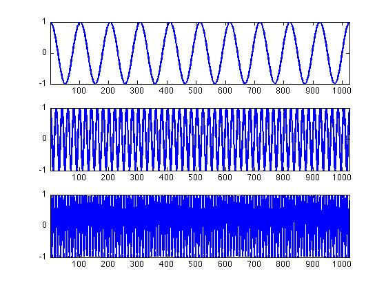
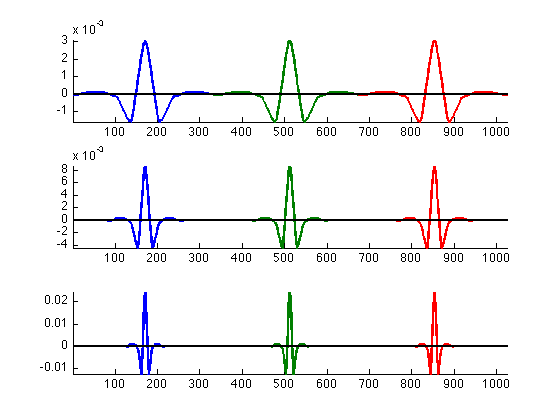
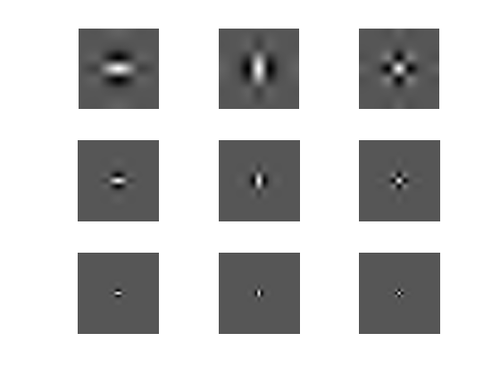

Introduction to Signal Decomposition
This numerical tour introduces the notion of orthogonal transform.
Contents
Installing toolboxes and setting up the path.
You need to download the general purpose toolbox and the signal toolbox.
You need to unzip these toolboxes in your working directory, so that you have toolbox_general/ and toolbox_signal/ in your directory.
For Scilab user: you must replace the Matlab comment '%' by its Scilab counterpart '//'.
Recommandation: You should create a text file named for instance numericaltour.sce (in Scilab) or numericaltour.m (in Matlab) to write all the Scilab/Matlab commands you want to execute. Then, simply run exec('numericaltour.sce'); (in Scilab) or numericaltour; (in Matlab) to run the commands.
Execute this line only if you are using Matlab.
getd = @(p)path(path,p); % scilab users must *not* execute this
Then you can add these toolboxes to the path.
% Add some directories to the path getd('../toolbox_signal/'); getd('../toolbox_general/');
Fourier Representation
The Fourier coefficients are the decomposition of the signal in the orthogonal basis of Fourier sinusoids.
Display 1D sinusoids of various frequencies.
n = 1024; freq = round( [ .01 .05 .1 ]*n ); t = 0:n-1; clf; for i=1:length(freq) subplot(length(freq), 1, i); h = plot( cos(2*pi/n*freq(i)*t ) ); axis('tight'); set(h, 'LineWidth', 2); end
Exercice 1: (the solution is exo1.m) Display 2D sinusoids of various frequencies.
exo1;
Wavelet Representation
The wavelet atoms are indexed by both a translation and a scale parameter.
We display 1D wavelets at various scales.
options.ti = 1; n = 1024; Jmin = 4; y = perform_wavelet_transf(zeros(n,1), Jmin, +1, options); nJ = 3; nT = 3; sel = linspace(0,n-1,nT+1); sel = sel(1:nT); sel = sel+round(sel(2)/2); clf; for j=1:nJ subplot(nJ,1,j); x = []; for i=1:nT y = y*0; y(sel(i),:,j+1) = 1; x(:,i) = perform_wavelet_transf(y, Jmin, -1, options); end hold on; h = plot(x); axis('tight'); set(h, 'LineWidth', 2); h = plot(1:n, zeros(n,1), 'k'); set(h, 'LineWidth', 2); end
Exercice 2: (the solution is exo2.m) Display 2D wavelets at various scales.
exo2;